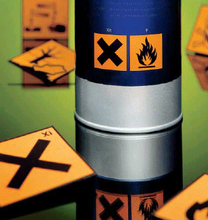

Die Gefahrstoffverordnung, aber auch berufsgenossenschaftliche Regelwerke erlegen dem Unternehmer, der Tätigkeiten mit Gefahrstoffen durchführt bzw. durchführen lässt, eine Reihe von Verpflichtungen auf, die im Folgenden konkretisiert werden. Da der Unternehmer mit der Erfüllung dieser Vorgaben oftmals überfordert ist, werden im Anschluss an dieses Kapitel die Hilfen beschrieben, die von GISBAU zu erhalten sind.
Die Beurteilung der Gefährdungen beim Verarbeiten von Gefahrstoffen ist die zentrale Foderung der Gefahrstoffverordnung. Dabei kommt dem Begriff der "Tätigkeit" eine enorme Bedeutung zu. Im Rahmen der Gefährdungsbeurteilung ist zunächst festzustellen, ob bei Tätigkeiten mit Be- und Entschichtungsstoffen, also in der Regel beim Verarbeiten der chemischen Stoffe, Gefährdungen für die Beschäftigten bestehen. Dabei kann der Unternehmer sich nicht nur auf die Kennzeichnung auf dem Gebindeetikett oder im Sicherheitsdatenblatt verlassen. Vielmehr hat er verstärkt auch die unterschiedlichen Applikationsverfahren, die vor Ort verwendete Menge, die Arbeitsbedingungen und -umgebungen sowie die daraus resultierenden Expositionen zu betrachten. In Abhängigkeit von diesen Faktoren sind dann die mit den Tätigkeiten verbundenen inhalativen, dermalen und physikalisch-chemischen Gefährdungen unabhängig voneinaner zu beurteilen1) und die konkreten Maßnahmen festzulegen. Natürlich hat er dabei auch eventuell zu erwartende Brand- und Explosionsgefahren zu berücksichtigen.
Handelt es sich beim Umgang mit dem verwendeten Produkt um einen Gefahrstoff, ist zu prüfen, ob Be- und Entschichtungsstoffe mit einem geringeren gesundheitlichen Risiko erhältlich sind. Sollten solche Produkte verfügbar und einsetzbar sein, sind diese Ersatzstoffe zu verwenden, wenn es dem Unternehmer zugemutet werden kann.
Die Gefährdungsbeurteilung ist vom Unternehmer zu dokumentieren1). Dabei ist anzugeben, welche Gefährdungen am Arbeitsplatz auftreten und welche Maßnahmen zur Gefahrenabwehr durchgeführt werden müssen. Anzugeben ist auch, warum eventuell vorhandene Ersatzstoffe nicht eingesetzt werden.
Die Gefahrstoffverordnung lässt dem Unternehmer, der Gefahrstoffe verarbeitet, einen größeren Spielraum z.B. bei der Frage, welche organisatorischen, technischen und persönlichen Schutzmaßnahmen vor Ort zu ergreifen sind. Ergibt sich aus der Gefährdungsbeurteilung, dass bei einer bestimmten Tätigkeit mit einem chemischen Arbeitsstoff nur eine "geringe" Gefährdung besteht, also beispielsweise beim Auftragen von Disperionsfarben mit der Rolle, sieht die Verordnung erhebliche betriebliche Erleichterungen vor.
So brauchen beispielsweise bei geringen Gefährdungen für die Beschäftigten weder Betriebsanweisungen erstellt noch Gefahrstoffverzeichnisse geführt zu werden, wenn bestimmte eigentlich selbstverständliche hygienische und arbeitsorganisatorische Maßnahmen ergriffen wurden. Wann eine Gefährdung als gering anzusehen ist, bestimmt dabei der Unternehmer selbst.
Sofern mehr als "geringe" Gefährdungen bestehen, sind folgende wesentliche Punkte zu beachten:
Der Unternehmer ist verpflichtet, ein Verzeichnis aller im Betrieb verwendeten Gefahrstoffe zu führen. Dieses Gefahrstoffverzeichnis muss mindestens folgende Angaben enthalten:
Der Unternehmer, der in seinem Betrieb Gefahrstoffe verarbeitet oder verarbeiten lässt, hat zu ermitteln, ob die Arbeitsplatzgrenzwerte der bei der Verarbeitung frei werdenden Stoffe eingehalten werden.
Wichtig in diesem Zusammenhang ist, dass nicht vorgeschrieben wird, jeden einzelnen Arbeitsplatz messtechnisch zu begleiten. Die Gefahrstoffkonzentration zu ermitteln kann auch bedeuten, eine Abschätzung der Luftbelastung durch Berechnung oder Vergleich mit bereits vorhandenen Messungen vorzunehmen. Möglich ist dieses beispielsweise durch Messungen an einem Arbeitsplatz und Übertragung der Ergebnisse auf vergleichbare Arbeitsplätze.
Bevor am Arbeitsplatz mit gesundheitsgefährlichen Stoffen umgegangen wird, hat der Unternehmer die technischen, organisatorischen und persönlichen Schutzmaßnahmen festzulegen. Dabei kommt es nicht nur auf geeignete Maßnahmen an; wichtig ist zudem, dass die erforderlichen Regelungen in der vorgeschriebenen Reihenfolge vorgenommen werden.
Die Arbeitsverfahren sind so zu gestalten, dass gefährliche Gase/ Dämpfe möglichst nicht frei werden. Als weitere Maßnahme sind natürliche Lüftungen und/oder Absaugungen vorzusehen.
Neben diesen technischen Vorkehrungen ist durch organisatorische Maßnahmen sicherzustellen, dass die Zahl der gefährdeten Personen möglichst gering gehalten wird.
Erst wenn trotz technischer Schutzmaßnahmen die Arbeitsplatzgrenzwerte nicht eingehalten werden, hat der Unternehmer geeignete persönliche Schutzausrüstung zur Verfügung zu stellen und dafür zu sorgen, dass diese auch getragen wird. Zu beachten ist dabei, dass das Tragen von belastender persönlicher Schutzausrüstung, z.B. Atemschutz, Chemikalienhandschuhe, Vollschutzanzüge, keine ständige Maßnahme sein darf.
Der Unternehmer, dessen Beschäftigte Tätigkeiten mit Gefahrstoffen durchführen, hat eine arbeitsbereichs- und produktbezogene Betriebsanweisung zu erstellen, in der die von den Gefahrstoffen ausgehenden Gefahren, die Schutz- und/oder Hygienemaßnahmen sowie sonstige Verhaltensregeln beschrieben werden. Darüber hinaus sind Anweisungen über das Verhalten im Gefahrfall, die sachgerechte Entsorgung und die Erste-Hilfe zu geben.
Die Betriebsanweisung ist in leicht verständlicher Form und in der Sprache der Beschäftigten abzufassen und an geeigneter Stelle im Betrieb oder auf der Baustelle bekannt zu machen.
Anhand der Betriebsanweisung sind die Beschäftigten vor Aufnahme der Tätigkeit und danach mindestens einmal jährlich zu unterweisen, wobei neben den einzelnen Punkten der Betriebsanweisung auch auf mögliche Beschäftigungsbeschränkungen (für Jugendliche und werdende Mütter) hinzuweisen ist. Inhalt und Zeitpunkt der Unterweisung sind schriftlich festzuhalten und von den Beschäftigten durch Unterschrift zu bestätigen. Im Rahmen der Unterweisung soll auch eine allgemeine arbeitsmedizinisch- toxikologische Beratung durch einen Facharzt für Arbeitsmedzin oder die Zusatzbezeichnung "Betriebsmedizin" durchgeführt werden.
Darüber hinaus muss der Unternehmer dafür sorgen, dass seine Beschäftigten Zugang zu den Sicherheitsdatenblättern der Produkte haben, die im Betrieb verarbeitet werden.
Bei Vorsorgeuntersuchungen ist grundsätzlich zu unterscheiden zwischen
Allgemeine Vorsorgeuntersuchungen ergeben sich aus dem Arbeitssicherheitsgesetz und sind jedem Mitarbeiter anzubieten. Spezielle Vorsorgeuntersuchungen ergeben sich aus der Verordnung zur arbeitsmedizinischen Vorsorge. Die Untersuchungen sind - abhängig vom Ergebnis der Gefährdungsbeurteilung - vom Unternehmer entweder zu veranlassen (Pflichtuntersuchungen) oder anzubieten (Angebotsuntersuchungen).
Beim Verarbeiten von Be- und Entschichtungsstoffen können grundsätzlich folgende spezielle arbeitsmedizinische Vorsorgeuntersuchungen notwendig werden:
Die arbeitsmedizinischen Vorsorgeuntersuchungen werden beispielsweise vom Arbeitsmedizinisch-Sicherheitstechnischen Dienst der Berufsgenossenschaft der Bauwirtschaft (ASD der BG BAU) durchgeführt.
| 1) | siehe Kapitel Gefährdungsbeurteilung unter "Hilfen durch GISBAU" |